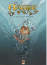

La grippe coloniale , Tome 1
La grippe coloniale , Tome 1Bande dessinée | cartonné | Vents D'ouest | octobre 2003
{% fnac "bd-grippe1", "https://livre.fnac.com/a1446960/La-grippe-coloniale-Le-retour-d-Ulysse-Tome-01-La-Grippe-Coloniale-Appollo" %}
Petite sélection non exhaustive de bandes dessinées sur la Réunion ou par des réunionnais.
Dyptique historique relattant l'après première guerre mondiale et l'arrivée de la grippe espagnole sur l'île. Cette BD primée Angoulěme a fait l'objet d'un article dédié.
La grippe coloniale , Tome 1
Bande dessinée | cartonné | Vents D'ouest | octobre 2003
{% fnac "bd-grippe1", "https://livre.fnac.com/a1446960/La-grippe-coloniale-Le-retour-d-Ulysse-Tome-01-La-Grippe-Coloniale-Appollo" %}
La grippe coloniale , Tome 2
Bande dessinée | cartonné | Vents D'ouest | juin 2012
{% fnac "bd-grippe2", "https://livre.fnac.com/a4035101/La-grippe-coloniale-Cyclone-la-Peste-Tome-02-La-Grippe-Coloniale-Appollo" %}
La grippe coloniale , Tome 1 et 2
Bande dessinée | coffret | Vents D'ouest | novembre 2013
{% fnac "bd-grippe12", "https://livre.fnac.com/a6154665/La-grippe-coloniale-Tome-1-et-Tome-2-La-Grippe-Coloniale-Coffret-Tomes-01-et-02-Appollo" %}
Cette histoire en deux tomes peint la Réunion de la fin du XIXème siècle ou les progrěs sociologiques et technologiques s'entremèlent avec les souvenirs et l'histoire des ancètres et leurs espris (les fantômes blancs). Une histoire par l'auteur de la grippe coloniale, avec un autre ami dessinateur qui met en valeur les traits captivants de la Réunion comme les trésors pirates et les relans amers de l'esclavage.
 Les fantômes blancs , Tome 1
Les fantômes blancs , Tome 1
Bande dessinée | cartonné | Vents D'ouest | août 2005
{% fnac "bd-fantomes1", "https://livre.fnac.com/a1679562/Fantomes-blancs-Maison-Rouge-Tome-01-Fantomes-Blancs-Appollo" %}
 Les fantômes blancs , Tome 2
Les fantômes blancs , Tome 2
Bande dessinée | cartonné | Vents D'ouest | octobre 2006
{% fnac "bd-fantomes2", "https://livre.fnac.com/a1848006/Fantomes-blancs-Benedicte-Tome-02-Fantomes-Blancs-Appollo" %}
Dans un tout autre registre, Shovel propose des aventures de Jean-Michel, Doquiane et Brib dans le monde fantastique et souterrain d'Amborie. Un récit d'heroic fantasy plein d'humour en trois albums.
 Six Runkels en Amborie - Tome 01
Six Runkels en Amborie - Tome 01
Bande dessinée | cartonné | Epsilon BD | avril 2007
Jean-Michel, Doquiane et Brib escortés par le hazel, atteignent la porte du Lem-Mhy et le village naïul. Jean-Michel se voit offrir un bracelet aux pouvoirs magiques, qui facilitera son entrevue avec maître Jean…
{% fnac "bd-Amborie01", "https://livre.fnac.com/a2524646/Six-Runkels-en-Amborie-Tome-01-Six-runkels-en-Amborie-T01-Un-bracelet-d-Agliffe-Shovel" %}

Six Runkels en Amborie - Tome 02
Bande dessinée | cartonné | Epsilon BD | janvier 2009
Jean Michel, devenu maître Jean depuis son passage en Amborie, poursuit sa lutte contre Havorn en compagnie de Brib, Doquiane et du hazel, tout en cherchant un moyen de rejoindre son monde.
{% fnac "bd-Amborie02", "https://livre.fnac.com/a2524648/Six-Runkels-en-Amborie-Tome-02-Six-runkels-en-Amborie-T02-Un-collier-pour-parler-Shovel" %}
Six Runkels en Amborie - Tome 03
Bande dessinée | cartonné | Epsilon BD | janvier 2009
« On peut invoquer des légions entières, déplacer des mondes, créer des espèces et les dominer ! Bref, c’est un chouette bouquin ! »
{% fnac "bd-Amborie03", "https://livre.fnac.com/a2524649/Six-Runkels-en-Amborie-Tome-03-Six-runkels-en-Amborie-T03-L-amour-de-mon-ennemi-Shovel" %}
Les Fils de l’aigle est une série de bande dessinée qui se déroule dans toute l'Europe, après le premier empire. Daniel Vaxelaire en est le scénariste et le dessin est signé Michel Faure. Édité tour à tour par Hachette, Les Humanoïdes Associés, Arboris puis Theloma cette saga s'étale sur 10 albums parus entre 1985 et 1998. L'éditeur Theloma a fait parraître une réédition en 2007 que l'on peut encore trouver dans les boutiques de fnac.com
 {% fnac "bd-FilsDeLaigle", "https://www.fnac.com/Les-fils-de-l-aigle/si2604/livres" %}
{% fnac "bd-FilsDeLaigle", "https://www.fnac.com/Les-fils-de-l-aigle/si2604/livres" %}